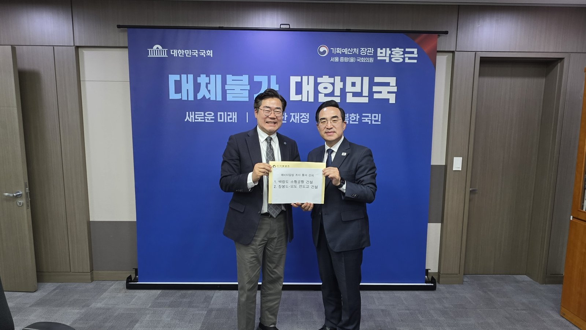

백령공항 타당성재조사 통과, 총사업비 3913억원에 2033년 개항 전망
예비타당성조사 때 2018억원, 80인승으로 키워 증액
비용편익비 1.0 미만, 종합평가 0.5 이상으로 통과
장봉도~모도 연도교 예비타당성조사는 진행 중
AI경제저널=김갑봉 기자 | 인천시(시장 박찬대)가 백령공항 건설사업이 타당성재조사를 최종 통과했다고 13일 밝혔다. 기획예산처 2026년 제9차 재정투자평가위원회 결과다. 총사업비 3913억원은 모두 국비이고, 개항 전망은 2033년이다.

80인승 소형공항, 총사업비 3913억원
백령공항은 옹진군 백령면 솔개지구 일원 81만4660㎡에 짓는 80인승 소형공항이다. 길이 1200m·폭 30m 활주로 1본과 계류장 4곳, 여객터미널이 들어선다. 사업은 국토교통부가 맡는다.
2022년 12월 예비타당성조사를 통과할 때 총사업비는 2018억원이었다. 국토부는 2024년 취항 항공기를 50인승에서 80인승으로 키웠다. 착륙대 폭도 150m에서 280m로 넓혔다. 사업비가 3913억원으로 늘어 타당성재조사를 받았다.
재조사는 2024년 한국개발연구원(KDI)이 맡아 약 2년이 걸렸다. 시는 그동안 후속 행정절차가 늦어져 사업이 사실상 멈춰 있었다고 밝혔다.
비용편익비 1.0 미만, 종합평가 0.5 이상
시는 이번 재조사에서 비용편익비(B/C)가 1.0에 못 미쳤다고 밝혔다. 계층화분석(AHP) 종합평가에서 0.5 이상을 얻어 통과했다. 종합평가는 경제성·정책성·지역균형발전을 함께 본다.
시는 섬이라 항공 수요가 적어 경제성 기준을 맞추기 어려웠다고 밝혔다. 시와 옹진군은 정책적 타당성으로 대응해 왔다. 2017년 국토부 사전타당성 검토 때 비용편익비는 2.19였다.
성연정(경북대) 등 연구진은 2021년 「한국방재안전학회논문집」에 수자원 분야 예비타당성조사 분석을 실었다. 2002~2019년 비용편익비 1 이상 34개 사업 가운데 33개가 통과했다. 1 미만 23개 가운데 통과는 7개였다.
개항 목표 2027년, 이번 전망 2033년
시는 2022년 12월 예비타당성조사 통과를 알리며 2025년 착공, 2027년 개항을 내걸었다. 이번 발표는 「당초 2030년」 개항이 2033년이 될 전망이라고 적었다. 재조사와 환경영향평가 협의 기간이 길어졌다고 시는 밝혔다.
국토부는 멈췄던 기본계획 수립 용역과 전략환경영향평가를 다시 시작한다. 국토부는 2025년 5월 전략환경영향평가 협의를 신청했고, 그해 8월 보완 통보를 받았다.
시가 밝힌 차례는 이렇다. 2027년 하반기 전략환경영향평가 보완·협의를 마치고 2028년 상반기 기본계획을 고시한다. 2029~2030년 한국공항공사가 설계를 하고 2031~2033년 공사를 할 예정이다.
하루 전 장관에게 연도교와 함께 건의
박찬대 시장은 하루 전인 12일 박홍근 기획예산처 장관을 만나 백령공항 재조사와 장봉도~모도 연도교 예비타당성조사의 연내 통과를 건의했다고 시는 밝혔다.
연도교는 옹진군 북도면 장봉도와 모도를 잇는 길이 1.8㎞ 왕복 2차로 다리다. 총사업비는 1085억원(국비 759억5000만원, 시비 325억5000만원)이다. 사업기간은 2026~2031년이고, 지난해 예비타당성조사 대상에 올랐다.
올해 신도평화대교가 열려 신도·시도·모도는 영종도와 이어졌다. 장봉도 주민은 여전히 여객선을 탄다.
재조사 통과가 섬 주민에게 말하는 것
시는 백령도가 기상이 나쁘면 여객선 운항이 끊긴다고 밝혔다. 시는 2021년 11월 여객선으로 4시간 넘게 걸리는 길이 비행기로 1시간 정도로 줄 것으로 내다봤다. 2022년 12월에는 결항·지연율을 해운 26.3%, 항공 7%로 들었다.
공항 부지는 2021년 25만4000㎡에서 81만4660㎡가 됐다. 총사업비는 예비타당성조사 때보다 1895억원 늘어 1.94배가 됐다(AI경제저널 계산). 시가 2022년 내건 개항 목표는 2027년이었다. 이번 전망은 2033년이다.
시는 2030년까지 배후부지 개발계획과 숙박·관광·레저 연계 전략을 마련할 방침이다.
박찬대 시장은 "이번 타당성재조사 통과는 백령도를 비롯한 서해 최북단 섬 주민들의 염원과 노력, 그리고 지역 정치권의 관심과 지원이 더해진 결실"이라고 말했다. 연도교 예비타당성조사 결과는 아직 나오지 않았다.
참고문헌
- "수자원분야 예비타당성 조사 정책효과 분석 방향", 성연정·최승안·권현한·정영훈, 「한국방재안전학회논문집」 14권 3호 1~16쪽, 2021, https://doi.org/10.21729/ksds.2021.14.3.1
- "'백령공항 건설'타당성재조사 통과… 사업 추진'속도'", 인천광역시 항공과, 2026.11.13, https://www.incheon.go.kr/IC010205/view?repSeq=DOM_0000000015967426
- "인천시, 백령공항·장봉도~모도 연도교 예타 통과 건의… 도서지역 교통망 확충 총력", 인천광역시 재정담당관실, 2026.11.13, https://www.incheon.go.kr/IC010205/view?repSeq=DOM_0000000015963725
- "백령도행 항공기 2027년 뜬다 … 백령공항 건설사업 예타 통과", 인천광역시 항공과, 2022.12.27, https://www.incheon.go.kr/IC010205/view?repSeq=DOM_0000000006449164
- "백령공항 예타 선정, 2027년엔 비행기타고 백령도 간다", 인천광역시 항공과, 2021.11.03, https://www.incheon.go.kr/IC010205/view?repSeq=DOM_0000000003614112
[사진 출처]
- [사진1·2] 인천시 재정담당관 보도자료 「인천시, 백령공항·장봉도~모도 연도교 예타 통과 건의… 도서지역 교통망 확충 총력」(2026.11.13) 붙임 현장사진 https://www.incheon.go.kr/IC010205/view?repSeq=DOM_0000000015963725
관련기사
- 청라연장선 시공사 경영진 간담회, 발표에 없는 새 개통 시점
- 인천도시철도 무임승차 4년 새 78.7% 증가…못 받은 운임 533억원
- 부평·주안 국가산단 재생에 341억원…주차 493면 확충
- 남동산단 복합문화센터 「산다락」 개관, 58억원 들인 1408㎡
저작권자 © AI경제저널 무단전재 및 재배포, AI학습 및 활용 금지